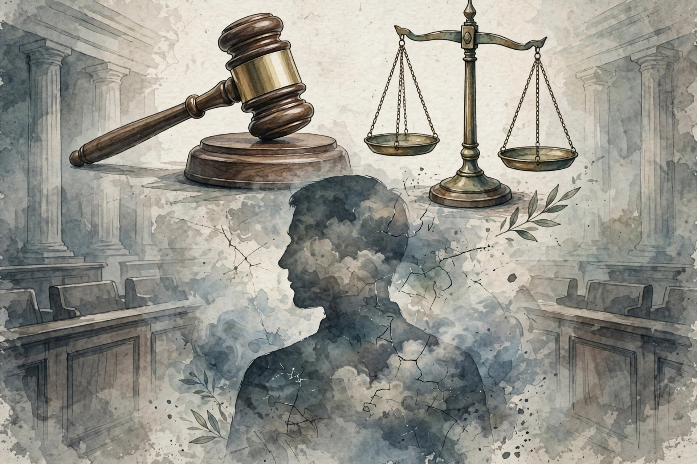

In criminal law, diminished responsibility (or diminished capacity) is a potential defence by excuse arguing that although the defendant broke the law, they should not be held fully criminally liable because their mental functions were impaired. In England and Wales, under the Homicide Act 1957 as amended by the Coroners and Justice Act 2009, it is a partial defence to murder that reduces the conviction to manslaughter.

The defendant must show an abnormality of mental functioning arising from a recognised medical condition, which substantially impaired their ability to understand their conduct, form a rational judgment, or exercise self-control, and which provides an explanation for the killing. The burden is on the defence, on the balance of probabilities, usually supported by psychiatric evidence.
Scotland recognises diminished responsibility at common law, codified in statute. In the United States, diminished capacity doctrines vary by state and often operate by negating specific intent rather than as a standalone partial defence.